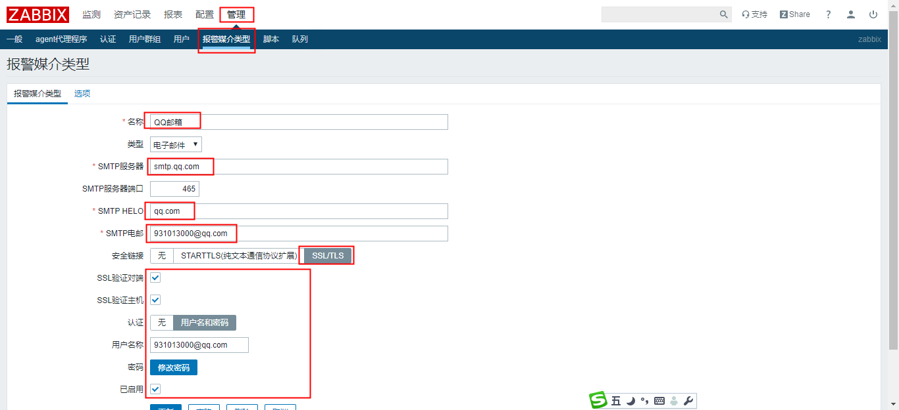

x1# 下载安装镜像源2[root@localhost ~]# wget https://dev.mysql.com/get/mysql80-community-release-el7-3.noarch.rpm3[root@localhost ~]# rpm -ivh mysql80-community-release-el7-3.noarch.rpm45# 修改 /etc/yum.repos.d/-community.repo67[mysql57-community]8name=MySQL 5.7 Community Server9baseurl=http://repo.mysql.com/yum/mysql-5.7-community/el/7/$basearch/10enabled=111gpgcheck=112gpgkey=file:///etc/pki/rpm-gpg/RPM-GPG-KEY-mysql1314# 安装5.7版本mysql15[root@localhost ~]# yum install -y mysql-community-serverxxxxxxxxxx361# 启动mysql服务2[root@localhost yum.repos.d]# systemctl start mysqld3[root@localhost yum.repos.d]# systemctl enable mysqld45# 查看mysql初始化密码6[root@localhost log]# grep 'password' mysqld.log 72020-05-07T10:02:02.233555Z 1 [Note] A temporary password is generated for root@localhost: 1Ut<gj0BfJez89# 修改root密码10mysql> alter user root@'localhost' identified by 'Abcd1234!';1112# 设置弱密码13mysql> show variables like '%validate_password%';14+--------------------------------------+--------+15| Variable_name | Value |16+--------------------------------------+--------+17| validate_password_check_user_name | OFF |18| validate_password_dictionary_file | |19| validate_password_length | 8 |20| validate_password_mixed_case_count | 1 |21| validate_password_number_count | 1 |22| validate_password_policy | MEDIUM |23| validate_password_special_char_count | 1 |24+--------------------------------------+--------+257 rows in set (0.01 sec)2627mysql> set global validate_password_policy=0;28Query OK, 0 rows affected (0.00 sec)2930mysql> set global validate_password_length=4;31Query OK, 0 rows affected (0.00 sec)3233# 修改root密码34mysql> alter user root@'localhost' identified by '123456';35Query OK, 0 rows affected (0.00 sec)36
xxxxxxxxxx71# 下载安装镜像源2[root@localhost ~]# wget https://mirrors.aliyun.com/zabbix/zabbix/4.0/rhel/7/x86_64/zabbix-release-4.0-2.el7.noarch.rpm34[root@localhost ~]# rpm -ivh zabbix-release-4.0-2.el7.noarch.rpm 56# 安装zabbix7[root@localhost ~]# yum install zabbix-server-mysql zabbix-web-mysql zabbix-agentxxxxxxxxxx81# 创建数据zabbix数据库并授权2[root@localhost ~]# mysql -uroot -p3mysql> create database zabbix character set utf8 collate utf8_bin;4mysql> grant all privileges on zabbix.* to zabbix@localhost identified by 'password';5mysql> flush privileges;67# 向zabbix数据库导入表8[root@localhost ~]# zcat /usr/share/doc/zabbix-server-mysql*/create.sql.gz | mysql -uzabbix -p zabbixxxxxxxxxxx151# 修改配置zabbix文件2[root@localhost ~]# vi /etc/zabbix/zabbix_server.conf34# 查看配置文件5[root@localhost ~]# grep "^DB" /etc/zabbix/zabbix_server.conf6DBHost=localhost7DBName=zabbix8DBUser=zabbix9DBPassword=1234561011# 修改PHP时区12[root@localhost ~]# vi /etc/httpd/conf.d/zabbix.conf13# php_value date.timezone Europe/Riga14php_value date.timezone Asia/Shanghai15xxxxxxxxxx21[root@localhost ~]# systemctl start zabbix-server.service httpd2[root@localhost ~]# systemctl enable zabbix-server.service httpd
USERNAME：Admin
PASSWORD：zabbix
xxxxxxxxxx21[root@localhost ~]# yum -y install wqy-microhei-fonts2[root@localhost ~]# cp /usr/share/fonts/wqy-microhei/wqy-microhei.ttc /usr/share/zabbix/assets/fonts/graphfont.ttf
创建组：groupadd zabbix
创建用户：useradd -g zabbix zabbix
创建目录：mkdir -p /usr/local/zabbix/zabbix-agent
修改目录属主：chown zabbix:zabbix /usr/local/zabbix
安装位置：/usr/local/zabbix/zabbix-agent
xxxxxxxxxx361# 解压到安装目录2[root@localhost ~]# tar xvf zabbix_agent-4.0.19-linux-3.0-amd64-static.tar.gz -C /usr/local/zabbix/zabbix-agent/34# 创建软连接5[root@localhost ~]# ln -s /usr/local/zabbix/zabbix-agent/sbin/zabbix_agentd /usr/sbin/zabbix_agentd67# 配置zabbix-agent.service8[root@localhost ~]# vim /usr/lib/systemd/system/zabbix-agent.service9[Unit]10Description=Zabbix Agent11After=syslog.target12After=network.target1314[Service]15Environment="CONFFILE=/usr/local/zabbix/zabbix-agent/conf/zabbix_agentd.conf"16# EnvironmentFile=-/etc/sysconfig/zabbix-agent17Type=forking18Restart=on-failure19PIDFile=/run/zabbix/zabbix_agentd.pid20KillMode=control-group21ExecStart=/usr/sbin/zabbix_agentd -c $CONFFILE22ExecStop=/bin/kill -SIGTERM $MAINPID23RestartSec=10s24User=zabbix25Group=zabbix2627[Install]28WantedBy=multi-user.target2930# 设置PIDFile31[root@localhost conf]# mkdir -p /run/zabbix32[root@localhost conf]# chown zabbix:zabbix /run/zabbix3334# 设置zabbix-agent日志目录35[root@localhost conf]# mkdir /var/log/zabbix36[root@localhost conf]# chown zabbix:zabbix /var/log/zabbix/
xxxxxxxxxx201# 发送告警信息2默认标题：故障{TRIGGER.STATUS},服务器{HOST.NAME}发生:{TRIGGER.NAME}故障。3告警主机：{HOST.NAME}4主机地址: {HOST.IP}5告警时间：{EVENT.DATE} {EVENT.TIME}6告警等级：{TRIGGER.SEVERITY}7告警信息：{TRIGGER.NAME}8问题详情：{ITEM.NAME}:{ITEM.VALUE}9当前状态：{TRIGGER.STATUS}:{ITEM.VALUE1}10事件ID：{EVENT.ID}1112####################################13告警主机：{HOST.NAME}14主机地址：{HOST.IP}15告警时间：{EVENT.DATE} {EVENT.TIME}16告警等级：{EVENT.SEVERITY}17告警信息：{EVENT.NAME}18当前状态：{EVENT.STATUS}19事件ID：{EVENT.ID}20{TRIGGER.URL}xxxxxxxxxx201# 恢复告警信息2默认标题：恢复{TRIGGER.STATUS},服务器{HOSTNAME1}:{TRIGGER.NAME}已恢复。3告警主机：{HOSTNAME1}4告警时间：{EVENT.DATE} {EVENT.TIME}5告警等级：{TRIGGER.SEVERITY}6告警信息：{TRIGGER.NAME}7问题详情：{ITEM.NAME}:{ITEM.VALUE}8当前状态：{TRIGGER.STATUS}:{ITEM.VALUE1}9事件ID：{EVENT.ID}1011#####################################12告警主机：{HOST.NAME}13主机地址：{HOST.IP}14告警时间：{EVENT.DATE} {EVENT.TIME}15恢复时间：{EVENT.RECOVERY.DATE} {EVENT.RECOVERY.TIME}16告警等级：{EVENT.SEVERITY}17告警信息：{EVENT.NAME}18当前状态：{EVENT.STATUS}19事件ID：{EVENT.ID}20{TRIGGER.URL}

xxxxxxxxxx451[root@localhost ~]# vim /usr/lib/zabbix/alertscripts/wechat.py2#-*- coding: utf-8 -*-4import requests5import sys6import os7import json8import logging9 10 11logging.basicConfig(level = logging.DEBUG, format = '%(asctime)s, %(filename)s, %(levelname)s, %(message)s',12datefmt = '%a, %d %b %Y %H:%M:%S',13filename = os.path.join('/tmp','weixin.log'),14filemode = 'a')15 16corpid='微信企业号corpid'17appsecret='应用的Secret'18agentid=应用的id19# 获取accesstoken20token_url='https://qyapi.weixin.qq.com/cgi-bin/gettoken?corpid=' + corpid + '&corpsecret=' + appsecret21req=requests.get(token_url)22accesstoken=req.json()['access_token']23 24# 发送消息25msgsend_url='https://qyapi.weixin.qq.com/cgi-bin/message/send?access_token=' + accesstoken26 27touser=sys.argv[1]28subject=sys.argv[2]29# toparty='3|4|5|6'30message=sys.argv[2] + "\n\n" +sys.argv[3]31 32params={33"touser": touser,34# "toparty": toparty,35"msgtype": "text",36"agentid": agentid,37"text": {38"content": message39},40"safe":041}42 43req=requests.post(msgsend_url, data=json.dumps(params))44logging.info('sendto:' + touser + ';;subject:' + subject + ';;message:' + message)45
xxxxxxxxxx61AgentId:10000022Secret:I6YA_TJ3gUny-t7t2mnXYZ8iExG7Mtd_ZEQBcOH5kN43企业ID:wweb9c9f3dadb0a68845测试6https://work.weixin.qq.com/api/devtools/devtool.php
xxxxxxxxxx151# 测试2[root@localhost externalscripts]# chmod +x wechat.py 34[root@localhost externalscripts]# ./wechat.py Zhang 'test' 'zabbix'5Traceback (most recent call last):6 File "./wechat.py", line 3, in <module>7 import requests8ImportError: No module named requests910[root@localhost externalscripts]# yum install python-pip11[root@localhost externalscripts]# pip install requests1213[root@localhost externalscripts]# ./wechat.py Zhang 'test' 'zabbix'1415